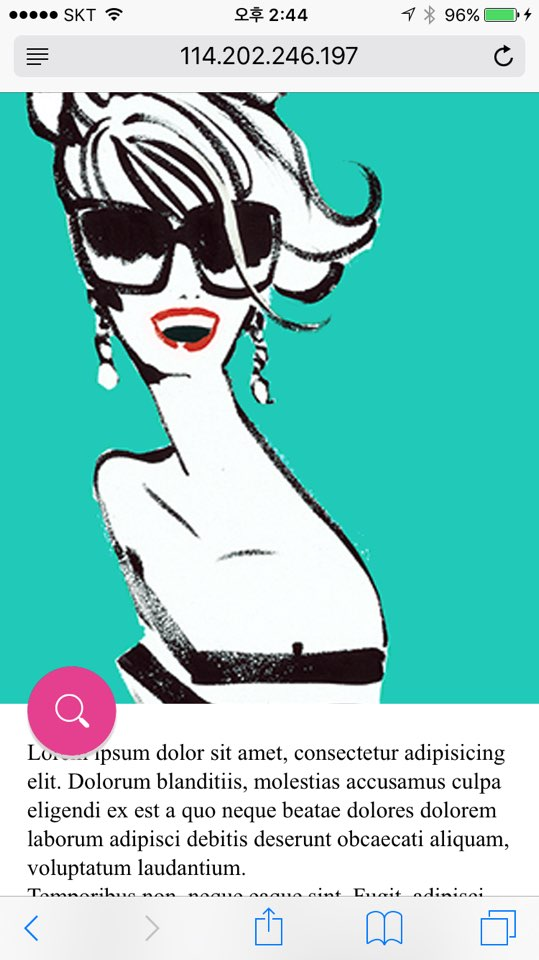

Mobile Web Labs
모바일 웹(웹앱)의 다양한 인터랙션을 실험한 페이지 입니다. touch 이벤트 기반으로 동작합니다. 모바일 웹에서 확인하시기 바랍니다.
SearchIcon animation
scroll을 하는 경우 검색아이콘이 사라지면서 새로운 bar 형태의 검색UI가 노출됩니다. 검색 Icon을 TOUCH 하는 경우에는 검색페이지로 animation과 함께 이동합니다.
